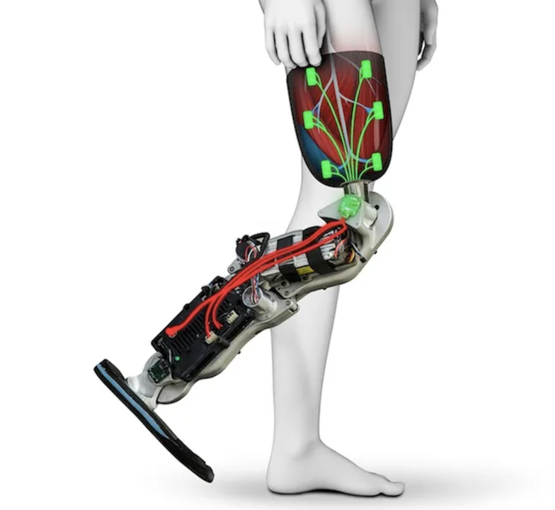
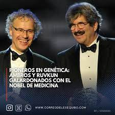

Médicos han utilizado con éxito un convoy de mil nanorobots para realizar procedimientos médicos innovadores.
Un paciente logró una cura funcional para la diabetes tipo 1, restaurando su producción de insulina mediante el uso de células madre.
Se destaca un evento internacional que reúne a personas con discapacidades físicas y les permite superar barreras con tecnología avanzada.
Un robot cuadrúpedo controlado por un piloto paraplégico demuestra cómo la tecnología puede ayudar a mejorar la accesibilidad y la movilidad.
El desarrollo de prótesis avanzadas

La falta de retroalimentación sensorial en prótesis de pierna dificulta la locomoción en terrenos irregulares.
Un piloto llamado Stephan compite con una prótesis que incorpora sensores para simular la sensación de tocar el suelo.
El Cybathlon se presenta como un campo de pruebas para evaluar tecnologías que podrían integrarse en la vida cotidiana de personas con discapacidad.
Ingenieros han mejorado un robot cuadrúpedo para que suba escaleras con eficiencia, utilizando técnicas avanzadas de aprendizaje por refuerzo.
Un robot maestro ha sido entrenado para escalar, permitiendo que otros robots aprendan a imitar su comportamiento.
La paciente ha sido curada funcionalmente de la diabetes tipo 1 y no necesita dosis de insulina desde hace más de un año.
La diabetes tipo 1 es una enfermedad autoinmune en la que el sistema inmunológico ataca las células del páncreas que producen insulina.
Se llevó a cabo un ensayo clínico que mostró resultados impresionantes al cultivar células madre de la paciente para regenerar las células productoras de insulina.
Las células cultivadas fueron trasplantadas a los músculos abdominales de la paciente, lo que resultó en una disminución de su dependencia de insulina.
Después de dos semanas del trasplante, la paciente ya no necesitaba insulina, manteniendo niveles de glucosa estables durante un año.
Innovación en medicina: una mirada desde la bioética
El ser humano es innovador por naturaleza y la Medicina no escapa a esta esencial característica de nuestra especie. La innovación es el modo de adaptarnos rápidamente a los cambios que sufre nuestro entorno y nuestras necesidades. Los modos de innovar responden a las oportunidades que nos brinda la capacidad de observación y juicio racional tan propio de los humanos, pero también pueden ser fruto de la casualidad, de la improvisación y la mayoría de las veces, del ensayo y error. El desarrollo científico y tecnológico como un círculo virtuoso, brindan plataformas para generar nuevo conocimiento. La investigación científica a través del método científico se ha consolidado como el mejor modo de avanzar en el conocimiento de las diversas ciencias y disciplinas afines que integran el saber humano y su interpretación del mundo que nos rodea. Este afán de innovar en Medicina ha trascendido a la sociedad por los grandes logros y avances científicos que han permitido aumentar la expectativa y calidad de vida de la humanidad. Sin embargo, también ha trascendido a veces, por faltas a los derechos de las personas a estar informadas, por violentar la protección de poblaciones vulnerables, por confundir los intereses de la ciencia biomédica con los intereses personales de los investigadores y en general, por faltas a nuestros acuerdos sociales de no dañar, de ser justos, de proteger la confidencialidad y de respetar la autonomía de cada individuo a decidir por sí mismo lo que mejor conviene a su persona. La bioética contribuye a entender la problemática de la innovación y desarrollo y también a proponer cursos de acción armónicos con nuestro marco valórico. De este modo, la sociedad ha generado marcos regulatorios que promueven la innovación respetando a las personas y al medio ambiente y protegiendo a los individuos que sirven como sujetos de la investigación científica.
Los nanorobots médicos autónomos basados en sensores
Para 2020, los científicos de la Universidad de Rutgers creen que los nanorobots probablemente se inyectarán en el torrente sanguíneo y se administrarán un fármaco directamente a una célula infectada. Este nanorobot cuenta con un cuerpo de nanotubos de carbono, un motor biomolecular que lo impulsa y extremidades peptídicas para orientarse.
Los nanorobots médicos autónomos basados en sensores
Para 2020, los científicos de la Universidad de Rutgers creen que los nanorobots probablemente se inyectarán en el torrente sanguíneo y se administrarán un fármaco directamente a una célula infectada. Este nanorobot cuenta con un cuerpo de nanotubos de carbono, un motor biomolecular que lo impulsa y extremidades peptídicas para orientarse.
Otorgan el Premio Nobel de Medicina a Victor Ambros y Gary Ruvkun

El Premio Nobel de Fisiología o Medicina de este año fue concedido a Victor Ambros y Gary Ruvkun por el descubrimiento del microRNA y su papel en la regulación postranscripcional de los genes.
El Premio Nobel de Fisiología o Medicina de este año fue concedido a Victor Ambros y Gary Ruvkun por el descubrimiento del microRNA y su papel en la regulación postranscripcional de los genes.
El Premio Nobel de Fisiología o Medicina de este año fue concedido a Victor Ambros y Gary Ruvkun por el descubrimiento del microRNA y su papel en la regulación postranscripcional de los genes.
El Premio Nobel de Fisiología o Medicina de este año fue concedido a Victor Ambros y Gary Ruvkun por el descubrimiento del microRNA y su papel en la regulación postranscripcional de los genes.